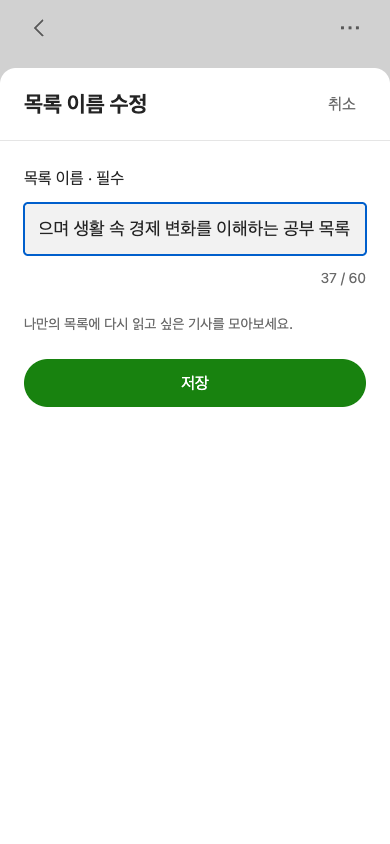

라이브러리 · 생성 후
목록 제목·기사 수·카드·내 목록 밑줄을 참고했다. 직접 만든 한글 콘텐츠와 4개 하단 탭을 유지한다. 원본 생성 배너는 상단 새 목록 버튼으로 제공한다.
2026-11-18. 보관된 Medium iOS Latest/1419 PNG 11장과 localhost:8081 Chrome 캡처. 원본 1179×2556 이미지는 가로 390px에 비율 유지 표시하며 원본 파일·여백·시스템 영역을 수정하지 않았다. 구현은 390×844 CSS px(제거 보조 화면 320×740)이다. 실제 네이티브 실행·키보드·OS 글자 확대 검증은 아니다.
목록 제목·기사 수·카드·내 목록 밑줄을 참고했다. 직접 만든 한글 콘텐츠와 4개 하단 탭을 유지한다. 원본 생성 배너는 상단 새 목록 버튼으로 제공한다.
이름 60자 안내·취소·비활성 생성 버튼·회색 입력을 참고했다. 설명과 공개 범위 설정은 제외했다. 원본의 전체 화면에 가까운 폼을 Safe Area 안의 확장 시트로 구성했다.
한글 입력·검증과 초록색 제출 버튼. 가상 키보드 없는 브라우저 캡처이며 실제 iOS 입력 화면과 같다고 주장하지 않는다.
Save to의 목록 체크·새 목록 만들기·Done 구조를 참고했다. 이번 기본안은 완료 시 바꾼 행만 반영하고 취소 시 미적용한다. 정적 원본에서 서버 반영 시점을 확인한 것은 아니다.
소유 구분·큰 제목·기사 수·중앙 빈 상태와 초록 버튼을 참고했다. 자체 안내는 기사의 저장할 목록 메뉴로 유도한다.
출처·제목·썸네일·메타 정보·구분선과 큰 목록 제목을 참고했다. 한글 요약·단일 좋아요·직접 제거 행은 우리 앱 요소다.
원본에는 Edit list info 메뉴가 있으나 편집 폼 캡처는 없다. 이름 수정 폼은 생성 폼 구조를 재사용한 자체 설계다. 원본 팝오버 대신 큰 글자·공통 닫기 경로를 위한 하단 시트를 사용했다.
빨간 삭제 버튼·취소 가능한 확인 시트·기사 원문 유지 안내를 참고했다. 다른 목록·좋아요 유지와 북마크 합집합 정책은 구현 기본안이다.
원본 더보기의 Remove this story를 직접 이 목록에서 제거 행으로 제공한다. 원본 Undo는 포함하지 않는다. 오른쪽은 320px 브라우저이며 390px로 확대하지 않는다.
선택 목록만 사라진 상태를 비교한다. 원본 읽기 목록의 기사 수 변화만으로 자동 이전을 단정하지 않았다. 우리 앱은 다른 목록에 자동 추가하지 않으며 별도 성공 토스트는 없다.
기본 읽기 목록·빈 개수·새 목록 진입. 공개 목록/저장한 외부 목록/하이라이트 탭과 프로모션 배너는 이번 범위에서 제외했다.
원본 메뉴만 확인했다. 아래 입력 폼은 원본 편집 화면의 재현이 아니다. 생성 폼 구조를 재사용하고 실패 시 입력 보존·동일 ID 재시도를 추가했다.
